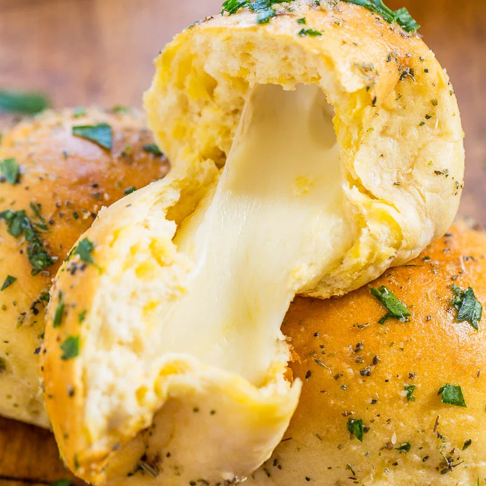

Mozzarella Biscuits

Items needed to make the pasta
- 1 Flat Pan
- 1 Rolling Pin
- 1 Small Bowl
- 1 Cooking Brush
- Parchment Paper
Ingredients (8 Servings)
- 1 Can of Pillsbury Buttermilk Grand Biscuits
- 4 Tablespoons Unsalted Butter
- 1 Tablespoon Garlic Powder
- 8 Mozzarella Cheese Sticks
- Flour
Directions
- Preheat oven to 350F
- Spread flour on the counter and take all the biscuits and roll them out flat
- Grab a mozzarella stick and bend it in half
- Place the mozzarella stick in the center of the flattened biscuit
- Pinch all the sides of the biscuit upwards making a ball
- Repeat steps 3 through 5
- On the flat pan with parchment paper on it, place the biscuit balls with the pinched side on the bottom
- Melt your butter in the small bowl in the microwave and the add the garlic powder
- Take the brush and put the mixture on the biscuit balls
- Put the pan in the oven for 13 to 16 minutes
- Enjoy!